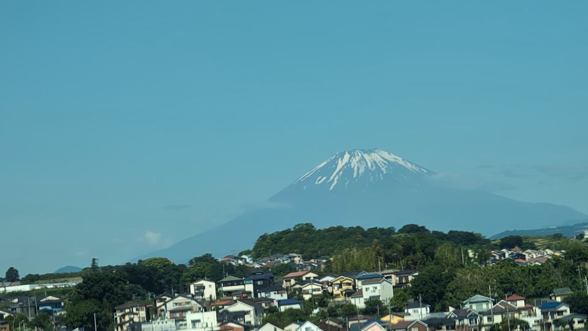
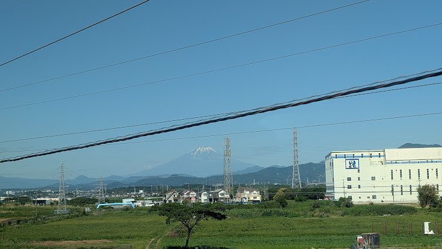
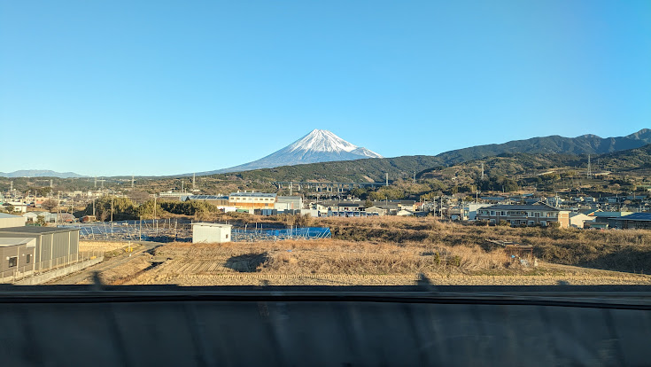

TOKAIDO SHINKANSEN WINDOW VIEW
相模平野の富士山は新幹線から見える？
平野の向こうに富士。

- 見える区間
- 新横浜 → 小田原
- 座席側
- E席・山側
- タイミング
- 東京発のぞみ基準で約27分後
- 写真
- 3 枚
相模平野の富士山の見つけ方
新横浜から小田原へ向かう途中、相模川が作った平野の向こうに、富士山が見える区間があります。丹沢山地と箱根山系のあいだから顔を出す、東京を出て最初に探したい富士山。新富士付近の主役とは違う、遠望の楽しさがあります。
東京から新大阪方面へ向かう場合は、新横浜 → 小田原が近づいたらE席・山側の窓を少し早めに見てください。新大阪から東京方面へ向かう場合は、通過順が逆になります。
東海道新幹線の車窓としてのポイント
相模平野の富士山は、富士山だけではない東海道新幹線の車窓を楽しむための見どころです。列車の速度が速いため、見える時間は短く、天気や座席位置によって見え方が変わります。
写真で見る相模平野の富士山

